기억
과거 가격·오차·다른 자산·은닉 상태 중 무엇을 쓰는가?
MACHINE TRADING · CHAPTER 3
예측 모형보다 먼저 정보 경계와 체결 가능성을 묻는다
모델 이름을 외우기 전에 세 경계를 하나의 검증 계약으로 묶는다.
과거 가격·오차·다른 자산·은닉 상태 중 무엇을 쓰는가?
시간 t의 정보만으로 t+1을 예측하고 한 시점 뒤에 거래하는가?
중간가격 우위가 스프레드와 회전율 뒤에도 남는가?
한 문장 결론 — 복잡한 모델보다 학습·예측·포지션·비용·표본외 평가의 경계가 먼저다.
한 가격의 기억에서 여러 자산의 연결, 보이지 않는 상태 추정으로 이동한다.
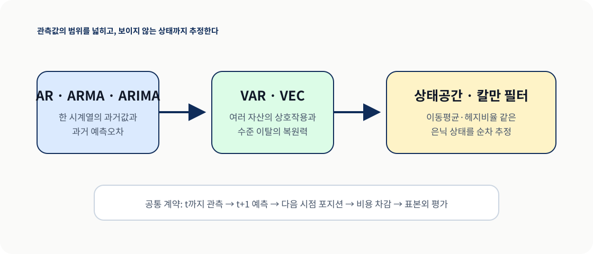
통화·비트코인처럼 펀더멘털 직관이 약한 시장에서 시계열은 실용적인 출발점이다.
MODEL
TRADING
경계 — “다음 값을 예측한다”와 “비용 후 수익을 낸다”는 서로 다른 주장이다.
SECTION 01
한 가격의 과거가 현재에 남기는 선형 기억
01통계적 부등식만 보지 말고 1과의 거리와 거래 빈도를 함께 읽는다.
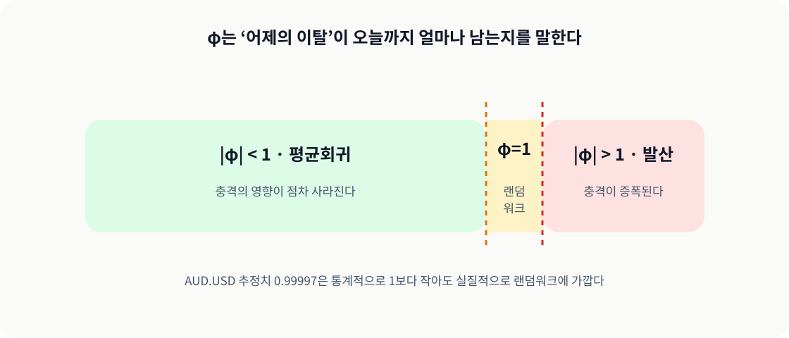
BIC는 로그가능도 개선과 모수 수 벌점을 함께 비교해 차수 p를 고른다.
p=1…60을 같은 학습 구간에서 비교한다.
교재의 AUD.USD 사례는 AR(10)을 사용한다.
직전 가격 영향이 대부분을 차지한다.
주의 — 학습 구간을 선언한 뒤 실제 적합 입력도 반드시 같은 구간이어야 한다.
교재 그림 3.1은 표본외 자산곡선과 연율 수익률 158%를 보고한다.
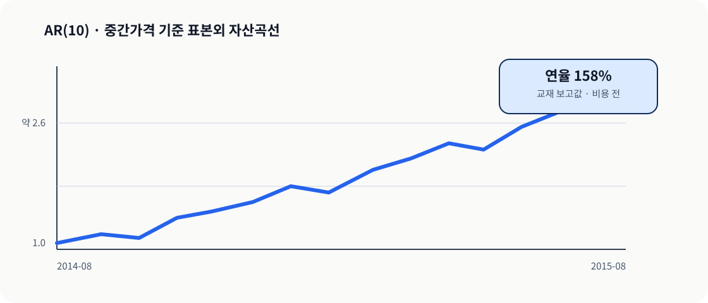
SECTION 02
가격의 기억에 예측오차와 차분을 더한다
02ARMA는 AR의 지연 가격과 MA의 지연 혁신을 결합한다. 교재 그림 3.2의 보고치는 연율 60%다.
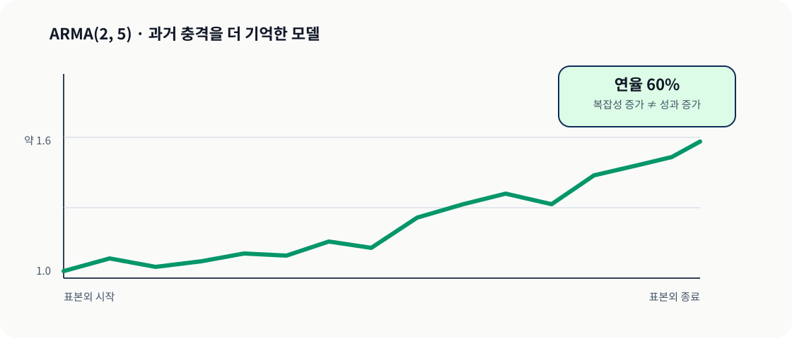
VAR는 각 자산을 모든 자산의 지연값으로 설명하고, VEC는 수준 이탈의 복원을 더한다.
| 관점 | VAR(p) | VEC(q) |
|---|---|---|
| 입력 | 여러 자산의 지연 수준 | 변화량 + 수준 관계 |
| 핵심 질문 | 서로의 과거가 다음 값을 설명하는가 | 장기 관계 이탈이 복원되는가 |
| 위험 | 자산 수와 시차에 따라 모수 폭증 | 음의 대각만으로 공적분을 확정 |
실무 제약 — 교재는 대각 행렬 제약으로 복잡도를 낮추지만, 경제적 정당화와 표본외 검증이 필요하다.
교재 그림 3.3은 컴퓨터 하드웨어 주식의 예측에서 횡단면 평균을 빼 포지션을 만든다.
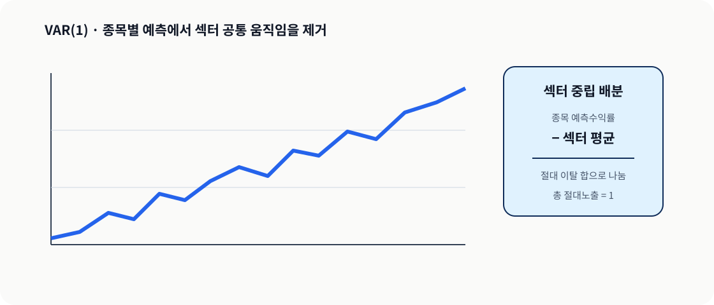
SECTION 03
눈에 보이지 않는 시간가변 상태를 추정한다
03상태 전이는 은닉 변수가 움직이는 법, 측정 방정식은 상태가 가격으로 드러나는 법을 정의한다.
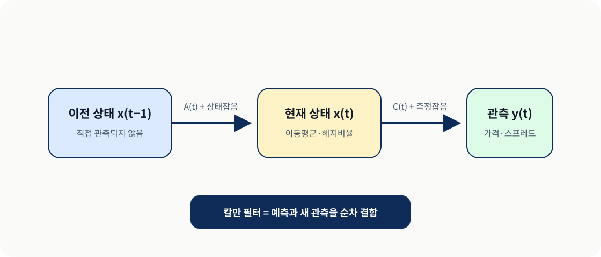
교재 그림 3.4는 컴퓨터 하드웨어 주식의 칼만 필터 전략을 학습 구간에서 평가한다.
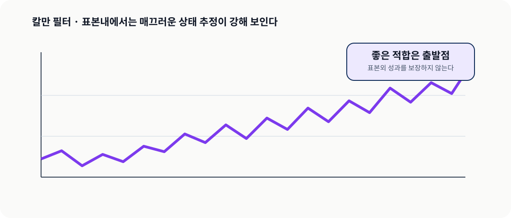
교재 그림 3.5는 표본내와 다른 표본외 경로를 보여 준다. 일반화 여부는 이 구간에서 판정한다.
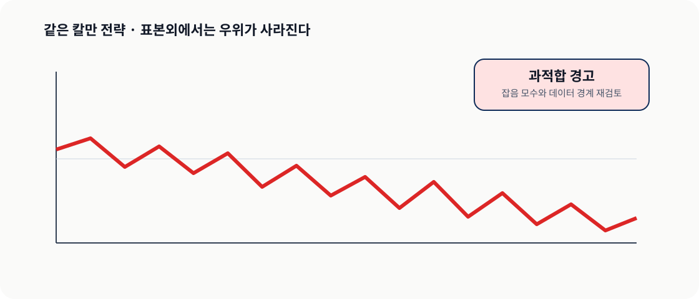
교재 그림 3.6은 EWA 대비 EWC의 기울기가 시간에 따라 변하는 추정 경로를 보여 준다.
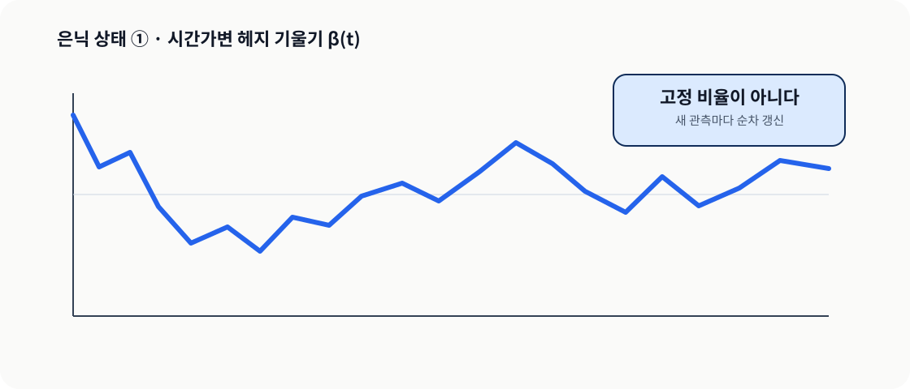
교재 그림 3.7의 오프셋은 기울기만으로 설명되지 않는 두 가격의 수준 차이를 흡수한다.
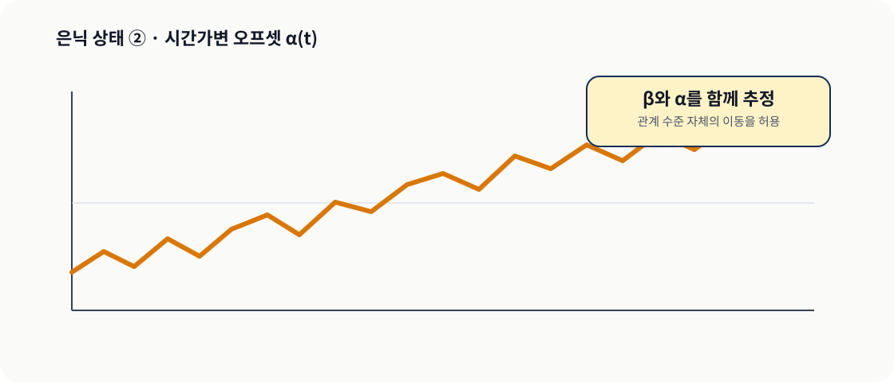
교재 그림 3.8은 동적 헤지비율과 오프셋으로 구성한 EWC–EWA 전략의 학습 성과다.
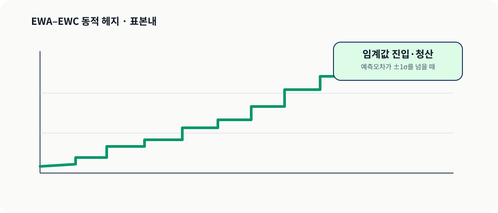
교재 그림 3.9는 같은 규칙의 표본외 성과가 약해지는 장면을 숨기지 않는다.
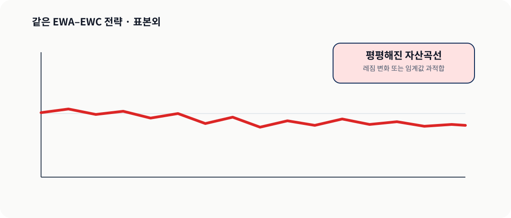
모델의 이름보다 입력되는 기억과 실패 경계를 먼저 분류한다.
| 모델 | 기억 | 먼저 볼 위험 |
|---|---|---|
| AR | 과거 가격 | 단위근·호가 반등 |
| ARMA / ARIMA | 가격 + 오차 / 차분 | 차수 선택·비정상성 |
| VAR / VEC | 여러 자산 + 장기 관계 | 차원·공적분·유니버스 |
| SSM / Kalman | 은닉 시간가변 상태 | 잡음 모수·레짐 변화 |
공통 판정 — 같은 시간·가격·비용 계약에서 표본외 성과가 남는가?
수식 확인, 추정 설계, 거래 검증을 한 문제 안에서 분리한다.
AR 정상성, 기대값, ARMA 예측식을 확인한다.
BIC, VAR·VEC, 상태공간 식을 설계한다.
칼만 신호와 표본외·비용 후 성과를 판정한다.
풀이 원칙 — 답을 얻는 코드보다 그 코드가 사용할 수 있는 정보 시점을 먼저 적는다.
교재의 MATLAB·Econometrics Toolbox 흐름을 사용할 때도 세 가지를 직접 고정한다.
입력 열, 기간, 유니버스와 가격 종류를 기록한다.
학습·예측·포지션·손익의 시점을 분리한다.
스프레드, 수수료, 회전율과 체결 규칙을 적용한다.
재현 가능성 — 같은 수치보다 같은 입력과 추정 창을 재현하는 것이 먼저다.
AIML QUANT SUPPLEMENT
수익률보다 먼저 시간·가격·데이터 경계를 재현한다
04학습 창 고정부터 표본외 판정까지 한 단계라도 섞이면 성과의 의미가 달라진다.
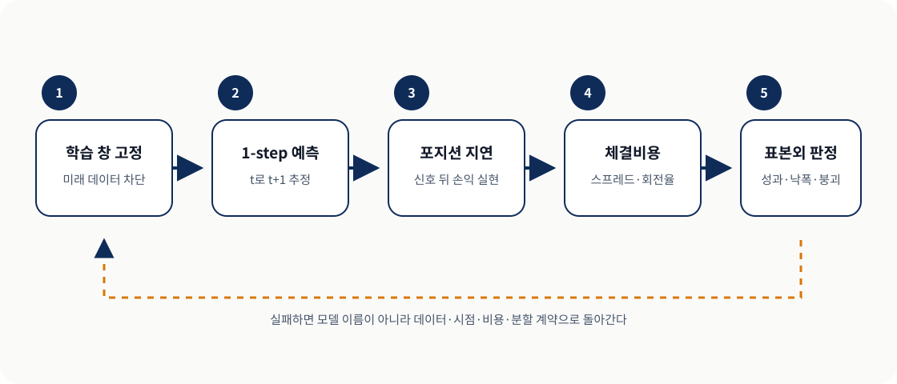
공식 소스와 제공 데이터로 가능한 범위를 먼저 고정한 뒤 모델별 판정을 내렸다.
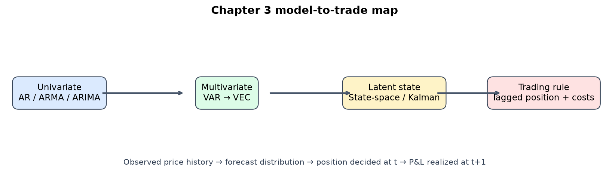
원본 코드는 trainset을 선언했지만 실제 AR 적합에는 전체 mid를 사용했다.

원본 CRSP midquote 패널이 없어 공식 close 입력으로 적응했고, 표본외 성과는 약했다.

published-parameter replay는 학습 구간 상승과 마지막 250일의 약화를 분리해 보여 준다.

모델을 바꾸기 전에 차수·학습 창·포지션 지연·비용·레짐 관측을 순환 점검한다.
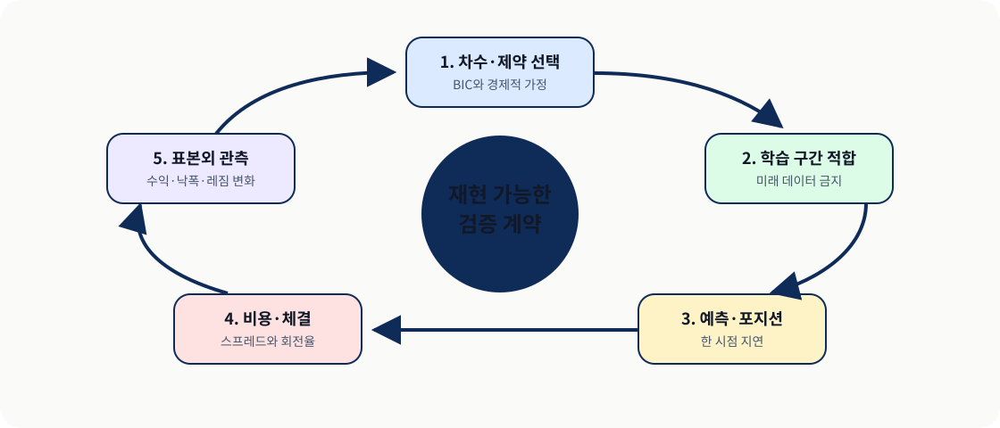
모델 성능이 아니라 재현 가능하고 체결 가능한 실험인지로 진행 여부를 판단한다.
| 경계 | 진행 신호 | 중단·재설계 신호 |
|---|---|---|
| 시간 | t 정보로 t+1만 예측 | 전체표본 적합·당일 손익 혼용 |
| 가격 | bid/ask와 비용 | 중간가격 수익만 주장 |
| 데이터 | 유니버스·기간·출처 고정 | 다른 입력을 정확 재현으로 표시 |
| 모수 | 사전 차수·제약 | 성과 후 반복 선택 |
| 운영 | 표본외·레짐 감시 | 학습 성과를 미래 상한으로 간주 |
KEY TAKEAWAYS
무엇을 기억할지에 따라 AR·VAR·SSM을 고른다.
학습·예측·지연 포지션·비용을 분리한다.
표본외와 체결비용 뒤에 남는 성과만 믿는다.
Q&A